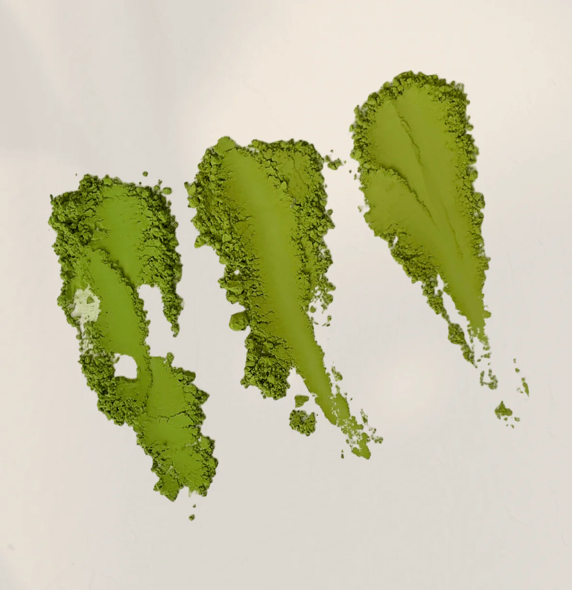

1
Color
A vibrant, bright green color indicates freshness and high quality. Dull or yellowish tones suggest lower grade or oxidation.
Good matcha is vibrant green, finely ground powder made from high-quality shade-grown tea leaves. It has a smooth, umami-rich flavor with a slight natural sweetness and no bitterness. The best matcha is ceremonial grade, stone-milled, and sourced from regions like Uji or Nishio in Japan, where traditional cultivation methods are preserved.

A vibrant, bright green color indicates freshness and high quality. Dull or yellowish tones suggest lower grade or oxidation.
Fine, silky powder (like baby powder) shows it has been properly stone-ground and processed.
Smooth, naturally sweet, and umami-rich with little to no bitterness–especially in ceremonial grade matcha.
Sourced from reputable regions in Japan like Uji, Nishio, or Yame, where traditional matcha cultivation is practiced.